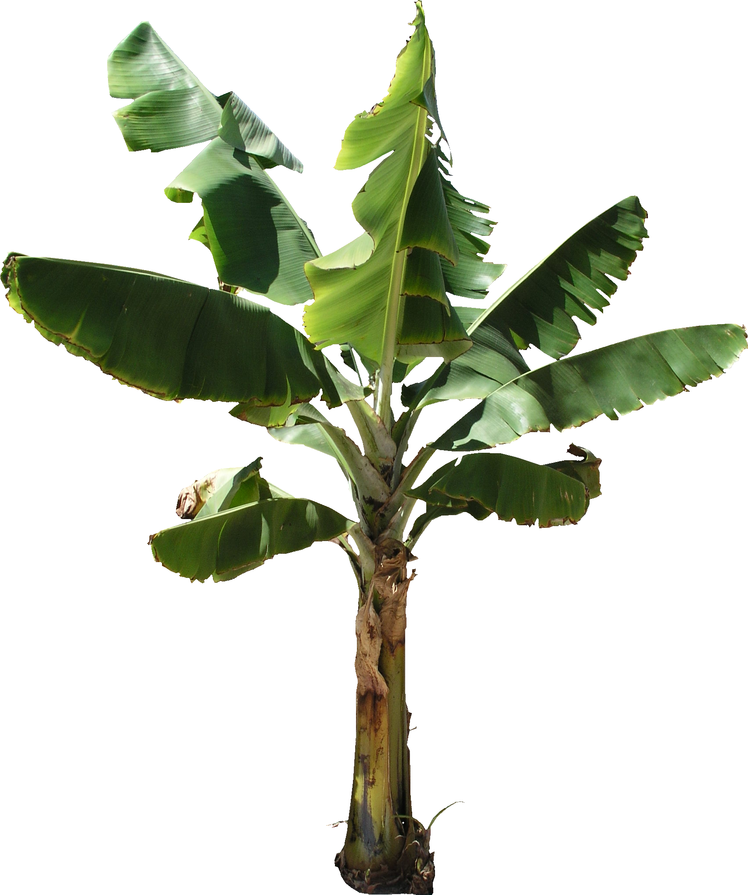
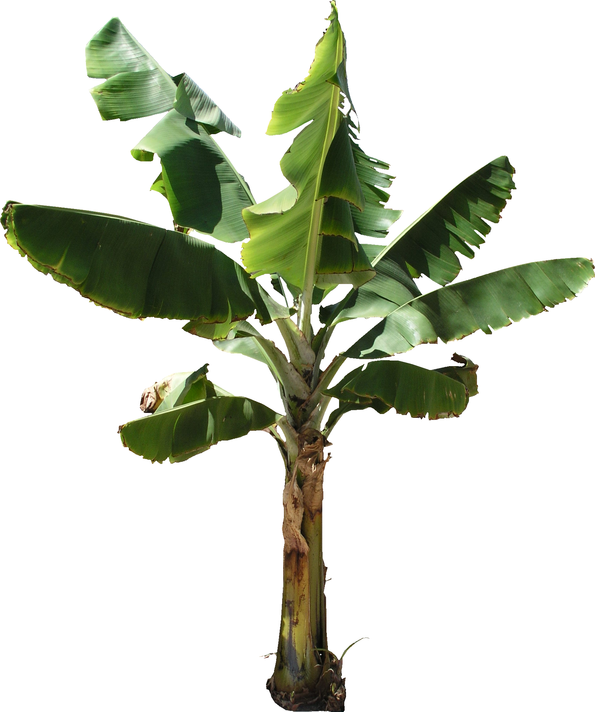
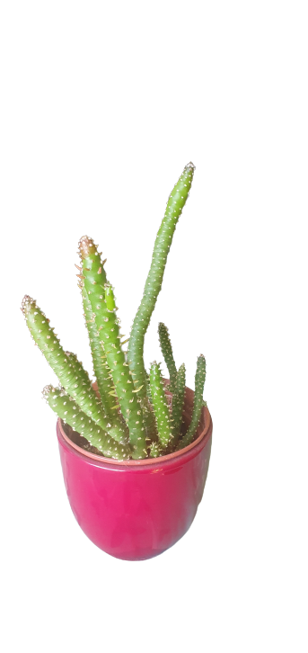
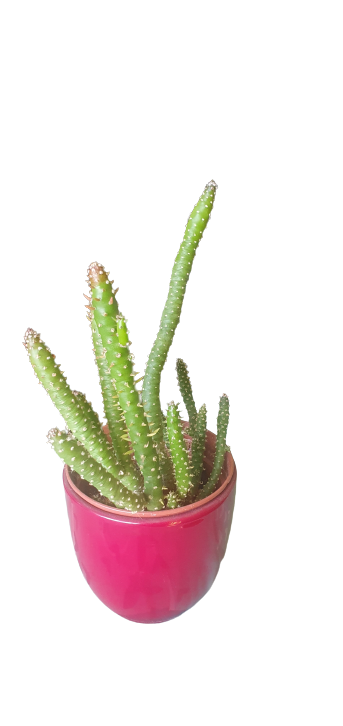
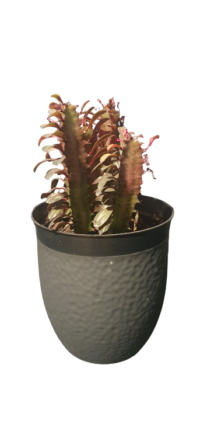
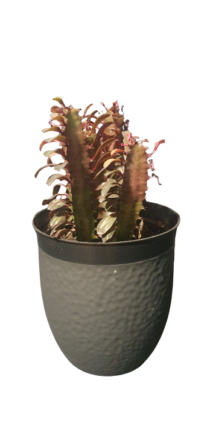

 


 



Omawiana roślina jest sukulentem, którego naturalnym środowiskiem występowania jest Afryka, Azja, Australia oraz Meksyk. Co ciekawe, gatunki draceny mogą się od siebie różnić wielkością, ubarwieniem oraz kształtem liści. Większość tych gatunków bardzo dobrze nadaje się do uprawy doniczkowej. Roślina ta ozdobi każde wnętrze, a dodatkowo nie wymaga specjalnych zabiegów pielęgnacyjnych wymagających wiedzy specjalistycznej. Dracena jest zdecydowanie rośliną, z której pielęgnacją poradzą sobie osoby mające trudności w opiece nad kwiatami. Dracena jest wytrzymała na wiele pomyłek, chociażby takich, jak zapominanie podlewania. Roślina magazynuje wodę w swoim pniu. Hodowanie jej niesie za sobą nie tylko aspekt estetyczny i wizualny, ale zgodnie z wynikami przeprowadzonych badań, poprawia jakość powietrza w swoim otoczeniu. Dracena neutralizuje zanieczyszczenia, absorbuje szkodliwe związki, między innymi formaldehydy.
Królową dracen uprawianych w doniczkach jest dracena obrzeżona, nazywana też draceną marginatą. Pochodzi ona z Madagaskaru. Cechą charakterystyczną jest pióropusz cienkich liści o ostrych końcówkach, które wieńczą pień / łodygę. W zależności od odmiany mogą one przybierać różne kolory. Nierzadkim przypadkiem jest to, że liście są wielobarwne. Roślina w swoim naturalnym środowisku potrafi osiągnąć wysokość trzech metrów. W hodowli doniczkowej osiągają wysokość nie większą niż 2 metry. Popularność w naszych domach zyskała także dracena wonna, zwana też draceną fragrans lub smokowcem wonnym. Tą odmianę w naturze możemy spotkać w Afryce. W odróżnieniu od wcześniej opisywanej odmiany ma grubszy pień oraz szersze, lancetowate liście. Wyrastają one z pędu tworząc coś na kształt parasola. Liście mogą osiągnąć długość nawet metra. Kwiatostan w kolorze zielonkawo-białym zebrany w wiechę wydziela intensywny zapach.
Interesująco wygląda dracena Sandera. Ta odmiana zwana też jest ze względu na swoje podobieństwo „szczęśliwym bambusem”. Pochodzi ona z Azji i swoim wyglądem potrafi zmylić przez co często brana jest za bambusa. Roślina ta jest niezwykle łatwa w uprawie, gdyż może rosnąć w samej wodzie. Warto również zwrócić uwagę na dracenę surculosa (rozgałęziona), która charakteryzuje się owalnymi liśćmi z kolorowymi plamkami.
Roślina nie wymaga specjalnego traktowania. Jej uprawa jest dziecinnie prosta i powinien poradzić sobie z nią każdy. Spełnienie podstawowych warunków draceny może zaowocować, kwitnieniem rośliny. Warto pamiętać o kilku podstawowych zasadach. Po pierwsze dracena kocha ciepło. Należy pilnować, by temperatura w pomieszczeniu, w którym ją trzymamy nie spadała poniżej 15 stopni Celsjusza. Kolejnym ważnym aspektem jest to, że roślina uwielbia duże nasłonecznienie. Nic dziwnego, dracena ma pochodzenie z ciepłych krajów, gdzie jest dużo światła. Największe naświetlenie wymagają odmiany z barwnymi liśćmi. Jest to dla nich o tyle ważne, że potrafią stracić swój kolor, jeżeli pozostawimy roślinę w cieniu. Część gatunków będzie świetnie czuło się na parapecie od południowej strony. Nasłonecznienie nie może być zbyt ostre, bo możemy poparzyć liście. Najlepiej dracenę hodować w nasłonecznionym miejscu z rozproszonym światłem.
Dracena jest dobrą rośliną do uprawy w domu, gdyż dobrze znosi trudne warunki, takie jak suche powietrze. Warto jednak spryskiwać jej liście wodą, wtedy roślina ucieszy nasze oko ich barwą. Zabieg ten zalecamy wykonywać w zimie. Podczas sezonu grzewczego wilgotność powietrza spada i może osiągnąć zbyt niski poziom dla uprawy draceny. Szczególną uwagę musimy zwracać, jeżeli posiadamy odmianę o kolorowych liściach, gdyż wymagają one więcej wilgoci. Zalecamy również wycierać liście rośliny z kurzu przy pomocy wilgotnej ściereczki.
Dracena nie wymaga dużego nawodnienia. Podlewamy ją zatem oszczędnie, zwłaszcza na jesieni i w zimie. Wtedy ta roślina odpoczywa. W pozostałych okresach roku należy zwiększyć intensywność podlewania, lecz z umiarem. Zalecamy zachowanie zasady: podlewam, gdy w doniczce jest sucho. Dracena nie lubi nadmiernej wilgoci, a pozostawienie jej w wodzie powoduje, że roślina niszczeje. Zaczynają wtedy gnić korzenie. Przesuszenie rośliny powoduje opadanie liści.
Roślina uwielbia żyzne, próchnicze, nieprzepuszczające podłoże. Miesiące ciepłe (marzec – sierpień) to okres wzrostu draceny. Warto wtedy wspomagać roślinę roztworem nawozu wieloskładnikowego, stosując go co 2 tygodnie. Odporność draceny sprawia, że nawet jak zrobimy to rzadziej to nic się nie stanie. W pozostałych miesiącach nie nawozimy rośliny.
Młode rośliny charakteryzują się szybkim wzrostem. Dlatego zaleca się coroczne przesadzanie draceny na początku jej życia. Rośliny w podeszłym wieku przesadzamy co dwa, trzy lata. Pamiętajmy, że każda kolejna doniczka powinna być jedynie niewiele większa od poprzedniej. Na jej dno warto wsypać kermazyt ogrodniczy lub drobne kamyczki. Zapewni to naszemu okazowi właściwy drenaż. Roślinę można umieścić w ziemi uniwersalnej dla roślin doniczkowych lub w specjalistycznej dedykowanej palmom.
Do rozmnożenia draceny wykorzystujemy sadzonki wierzchołkowe. Pobieramy je wiosną. Następnie warto spryskać je preparatem grzybobójczym i umieścić w torfie. Temperatura otoczenia miejsca gdzie przechowujemy sadzonki powinna wynosić około 25 stopni Celsjusza. Na koniec umieszczamy sadzonki w przepuszczalnym podłożu. Inną metodą rozrodu draceny jest wykorzystanie pędów, ale trwa to znacznie dłużej.
Najczęstszy problemem w hodowli draceny są suche końcówki liści. Są one efektem zbyt suchego powietrza. Zaleca się pryskanie liści w okresie wzrostu rośliny. Jeżeli dracena gubi dolne liście, oznacza to złą temperaturę otoczenia. Dotyczy to zarówno przypadku zbyt niskiej, jak i zbyt wysokiej temperatury. Nadmiernie duży wzrost temperatury może powodować pęknięcia liści. Pojawiają się przy nasadach powierzchni blaszkowych. Większość problemów z draceną wynika ze złych warunków hodowli. Należy dbać o odpowiednią wilgotność, temperaturę oraz nasłonecznienie. Dracena może zapaść również na choroby o podłożu bakteryjnym. Bardzo często pojawiają się wtedy plamy na liściach. Do zwalczania tego typu chorób służą specjalne preparaty.
Bananowiec pochodzi z tropikalnych i subtropikalnych rejonów Azji płd-wsch (Półwysep Malajski) i Australii, skąd jego uprawa rozprzestrzeniła się na wyspy Pacyfiku oraz wybrzeża Oceanu Indyjskiego i Amerykę Południową i Środkową. Rodzaj bananowiec - Musa obejmuje kilkadziesiąt gatunków potężnych bylin (do 10 m wysokości). Z ich podziemnego, bulwiastego kłącza o licznych korzeniach przybyszowych, wyrasta nibyłodyga zbudowana ze ściśle przylegających do siebie pochew liściowych zakończona czubem liści kilkumetrowej długości, pojedynczych, często postrzępionych przez wiatr. Również owocostany są ogromne, nawet 2-3-metrowe. Rośliny dają dobrze nam znane owoce, które spożywa się na surowo lub przetwarza na mączki, soki i napoje alkoholowe.
Uprawa bananowca w domu może dostarczyć wiele satysfakcji, a ta niezwykła roślina egzotyczna niejednokrotnie nas zadziwi. Należy jednak pamiętać, że pielęgnacja bananowca rosnącego w doniczce wymaga przestrzegania ściśle określonych zasad uprawy i zapewnienia roślinie jak najlepszych warunków. Oto sekrety uprawy i pielęgnacji bananowca w domu!
Bananowce są roślinami klimatu gorącego (temperatura powyżej 20°C), jednostajnie wilgotnego, uprawianymi dzięki nawadnianiu. Nie lubią wiatru ze względu na słabe łodygi i kruche liście. Najlepszymi glebami do ich uprawy są gleby drobnoziarniste, piaszczysto-gliniaste, dobrze nawodnione.
Zapewnienie właściwych warunków uprawy bananowca karłowego w mieszkaniu wymaga nieco wysiłku. Przede wszystkim roślina potrzebuje jak najwięcej światła i dużej wilgotności. Doskonale będzie się czuła na przeszklonej werandzie. Jeżeli nie masz werandy, dla młodych, niewielkich egzemplarzy wystarczy parapet okna południowego. Potem, gdy już wyrosną, trzeba je umieścić jak najbliżej okna, w miejscu nasłonecznionym.
Prawidłowo pielęgnowany bananowiec, któremu w sposób mechaniczny nie uszkodziliśmy liści, nie powinien w zasadzie chorować. Jeżeli na liściach zaczną się pojawiać plamy - najczęściej świadczy to o tym, iż roślina przebywa w zbyt chłodnym i ciemnym miejscu oraz jest zbyt obficie podlewana.
Jeśli chodzi o szkodniki roślin doniczkowych to mogą pojawić się przędziorki. Ich występowaniu sprzyja zbyt mała wilgotność powietrza w domu.
Niestety bananowiec kwitnie tylko raz i potem obumiera. Dlatego bardzo ważne jest aby uzyskać z niego nowe egzemplarze, zanim będzie za późno. Bananowca możesz rozmnożyć z odrostów korzeniowych. Aby to zrobić, gdy owoce dojrzeją i liście zaczną żółknąć, usuń owocujący pęd. Powstające młode odrosty zaczną wtedy szybko rosnąć i staną się nowymi roślinami.
Zdobycie sadzonki bananowca może być trudne i za pewne będzie ona dość droga. Jako alternatywy, można spróbować uprawy z nasion. Nasiona bananowców mają bardzo twarde łupiny. Dlatego przed siewem należy lekko uszkodzić ich łupiny np. pocierając papierem ściernym, a następnie moczyć (ok. 72 godz.) w letniej wodzie.
Większość paproci to rośliny pochodzące z dolnych partii lasów, dlatego ich wymagania z reguły są zbliżone. W naturze paprocie zasiedlają półcieniste dno lasu, rosną w wilgotnym, próchniczym podłożu, dlatego podobnych warunków oczekują również w uprawie domowej.
W mieszkaniach paprocie dobrze rosną w miejscach widnych, ale osłoniętych przed bezpośrednim słońcem. Źle natomiast czują się na południowym oknie, gdyż ich delikatne liście są bardzo wrażliwe na poparzenia.
Paprocie wymagają też przepuszczalnego, żyznego podłoża o lekko kwaśnym odczynie pH, dlatego najlepsza jest dla nich ziemia kompostowa z dużym udziałem torfu i próchnicy. Jeśli nie mamy możliwości samodzielnie jej przygotować, najlepiej kupić gotową ziemię do paproci w sklepie ogrodniczym.
Paprocie należy systematycznie podlewać, gdyż są bardzo wrażliwe na przesuszenie podłoża. Nie lubią jednak, gdy ziemia w doniczce jest zupełnie mokra, dlatego konieczna jest warstwa drenażu na dnie (np. z keramzytu).
W mieszkaniach najtrudniej zapewnić paprociom odpowiednią wilgotność powietrza i właściwą temperaturę. Paprocie najlepiej rosną w temperaturze pokojowej (19–22 st.C) oraz w pomieszczeniach o podwyższonej wilgotności powietrza. Z tego powodu szczególnie ciężkim okresem jest dla nich zima, gdyż w ogrzewanych mieszkaniach jest wtedy bardzo ciepło i sucho. Takie warunki najlepiej znosi nefrolepis sercolistny ‘Duffii’ i nefrolepis wyniosły, najgorzej – orliczka kreteńska, adiantum klinowate, zanokcica gniazdowa i platycerium (czyli łosie rogi).
Gdy wilgotność powietrza jest zbyt niska, a temperatura za wysoka paprocie często chorują lub usychają – dlatego zimą należy zadbać o nie szczególnie troskliwie. Jeśli nie ma możliwości przeniesienia roślin do niezbyt ciepłej, ale widnej łazienki, powinno się umieścić je jak najdalej od kaloryfera, a doniczkę ustawić na podstawce wypełnionej wodą i kulkami keramzytu. Dobrym pomysłem jest również ustawienie paproci w pobliżu odkrytego akwarium lub nawilżacza powietrza.
Monstera ‚Monkey Mask’, czyli Monstera Adansonii to jedna z łatwiejszych roślin w uprawie. Pochodzi z dżungli w Ameryce południowej i ma podobne wymagania jak większość roślin z tamtego rejonu. Jeżeli masz egzemplarz Monstery Deliciosa tym bardziej sobie poradzisz, bo te rośliny mają podobne potrzeby. Oto krótka ich lista:
Jest to żelazna roślina, której naprawdę ciężko zaszkodzić. Oczywiście może się zdarzyć, ale wtedy roślina szybko się regeneruje.
Przelana Monstera Monkey MaskZa dużo wody – brązowe końcówki liści Monstera Monkey Mask
Kiedy zaczynają się problemy z Monsterą Monkey Mask? Zwykle kiedy chcemy „za bardzo” ją uszczęśliwić podlewaniem albo nawożeniem. Krótka lista problemów i ich rozwiązania wygląda tak:
Bluszcz domowy uwielbia dobrze nawodnioną glebę. Należy więc podlewać go dosyć często. W okresie wiosennym i letnim roślina ta potrzebuje sporej ilości wody, jej podłoże powinno być stale wilgotne, więc podlewaj bluszcz ok. 2 razy w tygodniu. Zimą wystarczy, że podlejesz go raz na tydzień.
Bluszcz należy do roślin długowiecznych. Bez większych problemów może rosnąć ponad 10 lat. Gdy zauważysz nadmiernie wyrastające korzenie z dołu donicy, możesz przesadzić roślinę. Przed rozpoczęciem tej czynności powinieneś obficie podlać bluszcz, a po umieszczeniu go w nowym pojemniku — przez kilka pierwszych dni nie nawadniać go wcale. U starszych roślin wymieniaj tylko górną warstwę podłoża w doniczce.
Rozmnażanie bluszczu jest bardzo proste. Wiosna to najlepszy okres na zabieg, w którym wykonuje się sadzonki wierzchołkowe. Pierwszy etap polega na odcięciu około 10-centymetrowych, szczytowych fragmentów pędów. Następnie możesz usunąć z nich dolne liście. Gałązki te włóż do donic wypełnionych ziemią ogrodową i piaskiem, w proporcji 3:1. Sadzonki podlej, nakryj folią i postaw np. na parapecie okna. Czas ukorzeniania pędów mieści się w przedziale 3-4 tygodni. Gdy okres ten minie, zdejmij okrywającą pojemniki folię.
Przycinanie bluszczu to bardzo ważny element w jego uprawie. Jeżeli roślina skupia się na wypuszczeniu jednego pędu, przytnij go. Początkowo pnącze nie wygląda atrakcyjnie, ale przekłada się to na zagęszczenie bluszczu. Dzięki temu znacznie lepiej prezentuje się we wnętrzu, zwłaszcza zwisający z wysoko umieszczonych półek. Pamiętaj o skracaniu głównych pędów minimum raz w roku.
Odpowiedni nawóz do bluszczu to kolejny istotny czynnik w jego pielęgnacji. O nawożenie zadbaj szczególnie w okresie wegetacyjnym, czyli od kwietnia do sierpnia. Bluszcz domowy zasilaj nawozem do roślin zielonych. Dodaj go do wody i podlewaj nim bluszcz w mieszkaniu przynajmniej raz na tydzień, a zimą raz w miesiącu.
Bluszcz domowy to znakomita propozycja dla osób, które poszukują niezbyt wymagającej rośliny. Odpowiednia pielęgnacja i zadbanie o korzystne stanowisko dla rozwoju bluszczu jest kluczem do utrzymania go w prawidłowym stanie. Jeżeli zastanawiasz się, jakie rośliny zwisające zielone tworzą najpiękniejszy element dekoracyjny każdego wnętrza, to powinieneś zdecydowanie wybrać bluszcz doniczkowy.
Fikus jest nie tylko rośliną pokojową, ale także oczyszcza powietrze w pomieszczeniu z benzoli i fenoli (znakomicie sprawdzają się jako kwiaty do biura), a także oddaje swoją pozytywną energię. Osobliwością tego kwiatu jest to, że woli stałe miejsce i nie reaguje dobrze na częste zmiany. Przed planowanym zakupem należy wybrać dla niego miejsce, uwzględniając jego wymagania w zakresie oświetlenia i temperatury. Fikus preferuje świeże powietrze i światło, dlatego wielu właścicieli tych roślin w sezonie letnim umieszcza je na balkonie, pamiętając, że, roślina źle reaguje na przeciągi. W takich niesprzyjających warunkach fikus może zrzucić liście.
Fikus jest rośliną swiatłolubną, jednak nie może być narażony na bezpośrednie działanie promieni słonecznych. Te odmiany, które mają grube liście o ciemnym kolorze, można umieścić w słabiej oświetlonych miejscach. Gatunki o lekkich liściach potrzebują intensywniejszego oświetlenia, zimą zaleca się włączenie w ciągu dnia dodatkowych lamp. Jeśli fukus nie ma wystarczającej ilości światła, może zrzucić liście, a jego wzrost zostanie znacznie spowolniony. Nie lubi zmiany trybu oświetlenia. W okresie aktywnego wzrostu i kwitnienia fikus potrzebuje więcej światła niż podczas spoczynku. Odmiany o różnobarwnych liściach z powodu braku światła mogą stracić swój piękny kolor. .
Fikus jest termofilny, idealna temperatura wynosi od + 22 + 28° C w lecie i + 15 + 21 ° C w zimie. Odmiany fikusa o różnobarwnych liściach nie tolerują niskiej temperatury i przeciągów. Należy pamiętać, że zbyt wysoka i zbyt niska temperatura spowoduje opadnięcie liści. Jeśli roślina stoi na miejscu, które nie odpowiada jej wymaganiom temperaturowym (parapet lub podłoga), na zimę należy ją przenieść w cieplejsze miejsce lub postawić na stojaku. W gorące letnie dni, aby kwiat miał akceptowalną temperaturę, zaleca się spryskiwanie go pistoletem natryskowym. .
Jeśli odmiana fikusa ma duże grube liście, wilgotność powietrza nie ma większego znaczenia, będzie czuć się dobrze w naturalnych warunkach domowych. Aby stworzyć idealne warunki, zaleca się latem spryskiwanie kwiatów o małych liściach. Do tych celów konieczne jest odstawienie wody na 2-3 dni lub użycie deszczówki. Fikus Benjamin woli wysoką wilgotność, dlatego trzeba często go spryskiwać. Z braku wilgoci roślina zacznie zrzucać liście. .
Fikus woli regularne umiarkowane podlewanie, aby wykonywać to prawidłowo, trzeba przestrzegać kilku zasad: .
Częstotliwość podlewania fikusa trzeba dopasować do danej pory roku. W okresie zimowym wystarczy podlewać roślinę raz w tygodniu, a w czasie lata, co najmniej dwa razy. W czasie upałów trzeba sprawdzać stan gleby w doniczce i podlewać roślinę, gdy górna warstwa jest przesuszona. W celu dodatkowego nawodnienia gatunków drobnolistnych stosuje się raz w tygodniu opryskiwanie Zimą podlewanie jest ograniczone, ponieważ zbyt duże nawadnianie może spowodować obumarcie rośliny. Jeśli fikus znajduje się w pobliżu grzejnika, podlewanie musi być częstsze. W upalne dni można stosować kąpiele fikusa pod prysznicem. Okresowo należy poluzować glebę, aby zapewnić cyrkulację powietrza i lepszą wilgotność. .
Wiedząc, jak dbać o fikusa w domu, można wyhodować niektóre gatunki nawet do dwóch lub trzech metrów. Ale do aktywnego wzrostu rośliny wymagają okresowego nawożenia. Należy zacząć dokarmiać fikusa po okresie odpoczynku wczesną wiosną i robić to przez całe lato aż do września. Nawozy zawierające azot są niezbędne do tego, aby fikus uzyskał piękną koronę. Stosuje się je wiosną i wczesnym latem, nie można robić tego jesienią, ponieważ pędy będą cienkie i blade. Aby prawidłowo nawozić fikusa należy stosować nawozy mineralne i organiczne. W porównaniu z innymi roślinami fikus nie wymaga częstego dokarmiania. Podjęcie decyzji o nawożeniu wiąże się z następującymi czynnikach: .
Pielęgnacja fikusa wiąże się z wykonaniem przesadzania w celu normalnego rozwoju rośliny. Należy to zrobić, jeśli występują następujące czynniki: .
Rośliny, których wiek nie przekracza 4 lat, muszą być przesadzane, co roku. Starsze fikusy są przesadzane rzadziej, co 3-5 lat. Odpowiednim czasem do przesadzania jest wczesna wiosna. Biorąc pod uwagę, że fikus nie toleruje dużych zmian, natychmiast po przesadzeniu może stracić liście, ale zwykle w sezonie letnim roślina je odzyskuje. Doniczkę należy wybrać zgodnie ze wzrostem rośliny. Jeśli wzrost fikusa wynosi 125 cm, doniczka powinna mieć średnicę nie większą niż 23 cm. .
Dno doniczki powinno mieć otwory drenażowe, aby uniknąć zastoju wody. Glebę najlepiej wybrać o neutralnym składzie lub słabo kwaśnym. Musi być luźna, aby powietrze mogło swobodnie cyrkulować. Na dnie doniczki należy wyłożyć drenaż. Fikus powinien być podlewany ciepłą wodą i postawiony w miejscu bez bezpośredniego operowania światła słonecznego. Zawsze nie można zapominać o zabezpieczeniu rośliny przez przeciągami. Następnym razem należy go podlać po wyschnięciu górnej warstwy gleby nie mniej niż 2-3 cm. .
Fikusa można uprawiać na różne sposoby:
W domu fikusy praktycznie nie rozmnażają się przez nasiona, jest to bardzo czasochłonny i długotrwały proces. Aby stworzyć idealne warunki, stosuje się mini szklarnię, w której wysiewa się nasiona. Powinna być zapewniona wysoka wilgotność i odpowiednia temperatura. .
Sansewieria, zwana potocznie wężownicą lub – niezbyt przychylnie – językiem teściowej, jest jedną z najprostszych w pielęgnacji roślin doniczkowych. Z bryły korzeniowej wyrastają grube, wysokie, przypominające miecze liście, przypominające te u sukulentów. „Język teściowej” odnosi się do ostrych końcówek liści. Co lubi sansewieria? Jak o nią dbać?
Sansewieria jest łatwa w pielęgnacji – należy do tzw. roślin dla początkujących, gdyż wyjątkowo dobrze znosi błędy w pielęgnacji. Sansewierie pochodzą z jałowych regionów Afryki, gdzie światło jest zmienne, a wilgotność niska. Jeśli takie właśnie masz warunki w domu, to wężownica może być idealną rośliną dla Ciebie.
Najlepiej rośnie przy dużej ilości światła (zniesie nawet pełne słońce) ale radzi sobie również w półcieniu. .
Bryła korzeniowa musi mieć zapewnioną lekką wilgoć (zimą jednak powinna być nieco sucha), ale nie może stać w wodzie. Nie polewamy wodą rozet liści! Ze względu na soczystą budowę liści, sansewieria dobrze radzi sobie z suchym powietrzem. .
Sansewierie nie lubią zbyt wiele nawozu, więc zasilanie raz w roku (na wiosnę) nawozem długodziałającym w zupełności wystarczy. .
Sukulenty dobrze się czują w mieszkaniach, nawet w gorących i suchych wnętrzach. Najlepiej będą rosły jednak w temperaturze pokojowej 20-25 stopni. Nie lubią zimnych przeciągów! Na parapecie najlepszą lokalizacją jest okno południowo-wschodnie. Źle będą rosły na parapecie północnego i wschodniego okna, gdzie docierać będzie do nich za mało światła słonecznego. W półcieniu ich pędy będą żółkły, a rośliny będą wyciągać się do słońca.
Sukulenty to rośliny posiadające zdolność do magazynowania wody w mięsistych liściach lub pędach. Przy ich pielęgnacji warto kierować się jedną zasadą - lepiej roślinę przesuszyć niż zalać wodą. Od wiosny do jesieni rośliny regularnie podlewamy i zasilamy – najlepiej nawozem do sukulentów lub kaktusów. Częstotliwość podlewania uzależniona jest od stanowiska oraz temperatury. Przed kolejnym podlewaniem podłoże powinno lekko przeschnąć. W zimie podlewamy je bardzo skromnie lub w ogóle.
Papryka roczna (Capsicum annuum) znana jest także jako pieprzowiec roczny, pieprzowiec ostry, pieprz chilijski, pieprz turecki, pieprz hiszpański – jednak my (parapetowi ogrodnicy) nazywamy ją po prostu papryką ozdobną.
Jest ona karłową odmianą dobrze nam znanej jadalnej papryki słodkiej i chilli. Papryczki ozdobne można je uprawiać z nasion lub kupić już owocujące okazy.
Papryczki ozdobne kwitną i jednocześnie owocują nawet kilka miesięcy. Jeśli chcesz aby owoce były kolorowe – wystaw roślinę na taras i podlewaj codziennie!
1. Wybierz roślinę dobrze rozkrzewioną z dużą liczbą owoców. Liście powinny być żywo zielone i nie powinny więdnąć.
2. Ustaw ją w jasnym, słonecznym i przewiewnym miejscu. Słońce jest konieczne do dojrzewania owoców – rośliny wymagają kilkugodzinnego, intensywnego nasłonecznienia dziennie!. W zimie temperatura nie może być niższa niż 13 stopni, ani wyższa niż 21). Latem można ją wystawić na zewnątrz (sprzyja to zapylaniu kwiatów). Gdy ma za gorąco – liście więdną i opadają.
3. Podlewaj umiarkowanie i często, tak aby ziemia w doniczce była stale lekko wilgotna, ale nie mokra – woda nie może zalegać w podstawce! Na niedobór wilgoci reaguje zrzucaniem kwiatów i owoców, gdy stoi w wodzie szybko gniją jej korzenie.
4. Od początku kwitnienia (przez cały czas owocowania) zasilaj raz na tydzień nawozem uniwersalnym lu nawozem do pomidorów.
5. Po zakończeniu owocowania papryczkę wyrzucamy (w uprawie jest traktowana jako roślina jednoroczna, w naturze jest rośliną wieloletnią). Przed wyrzuceniem, z owoców pobieramy nasiona. Wysiewamy w marcu do skrzynek lub wielodoniczek. Zaczną kiełkować po 2-3 tygodniach w temperaturze około 18-25 stopni, a rośliny zaczną owocować 3-4 miesiące od siewu.
Opuntia subulata w naturze rośnie w niższych partiach Andów w Ekwadorze i Peru. Tworzy kolumnowy pokrój i dorasta do 4 metrów wysokości. Gatunek ten w miejscu naturalnego występowania uznawany jest za zagrożony wyginięciem i wpisany na listę CITES. W uprawie doniczkowej wzrost będzie dużo niższy i wolniejszy niż w naturze, a roślina osiągnie maksymalnie 70 cm wysokości. Z czasem utworzy pokrój kolumnowy i mocno rozgałęziony już od postawy pędu. Pędy są wzniesione, mają formę cylindryczną, średnicę 6 – 10 cm i pokryte są zielono- różowymi wałeczkowatymi liśćmi oraz haczykowatymi cierniami. Młodociane okazy mają zielone zabarwienie, natomiast starsze pędy z wiekiem nieco brązowieją. Charakterystyczne dla tego gatunku jest zwieńczenie pędów zielonymi, mięsistymi liśćmi, które skupiają się na wierzchołkach i szybko rozrastają. Opuntia subulata zakwita czerwonymi kwiatami o długości 6 cm, jednak w uprawie domowej kwitnie niechętnie. Po kwitnieniu tworzą się zielone, beczułkowate owoce o długości do 10 cm.
Walory Opuncji subulata:
Wymagania Opuntii:
Oferowane sadzonki produkowane są w podłożu torfowym, które nie nadaje się docelowo do uprawy ze względu na wysoki współczynnik absorpcji wody. Nadmiar wody prowadzi często do gnicia korzeni i rozwoju chorób. Zalecamy przesadzenie sukulentów bezpośrednio po otrzymaniu do właściwego podłoża. Specjalne podłoże do sukulentów o odpowiednio dobranych proporcjach składników zwiększających przepuszczalność znajdziesz w naszej ofercie klikając tutaj. Specjalnie dla Państwa przygotowaliśmy też instrukcję przesadzania sukulentów krok po kroku. Instrukcja dostępna jest tutaj. Najlepszy termin na przesadzanie sukulentów to wiosna i lato. Kupując sukulenty w okresie jesiennym i zimowym, bezpieczniej jest pozostawić je w dotychczasowym podłożu dbając o bardzo oszczędne podlewanie. W okresie jesienno-zimowym sukulenty rosnące w takim podłożu podlewa się niewielką ilością wody raz na 4-8 tygodni (zależnie od temperatury). Aby zminimalizować ryzyko przelania, najlepiej do podlewania używać ręcznego rozpylacza do wody. Wyraźnym wskaźnikiem do kolejnego podlania jest obkurczenie liści sukulentów. Dostosowanym do wymagań rośliny, jest nawóz do kaktusów i sukulentów.
Grudnik częściej spotykany jest pod nazwą kaktus bożonarodzeniowy ale mnogość nazw zwyczajowych tej rośliny nie kończy się na tych dwóch! Możemy znaleźć ją też jako grudzień, grudniówka, barbórka, raczek, kaktus Bożego Narodzenia, zygokaktus, filokaktus, epifylum zimowe czy też bierwion zimowy.
Roślina ta zaliczana jest do rodzaju Schlumbergera, a jej prawidłowa nazwa to schlumbergera zimowa (Schlumbergera trunctata). Nazwa rodzaju pochodzi od francuskiego kolekcjonera kaktusów – Frédérica Schlumbergera. Znanych jest ich 6 gatunków – S. kautskyi, S. microsphaerica, S. opuntioides, S. orssichiana, S. russelliana, S. truncata, a w uprawie występują głównie mieszańce schlumbergery zimowej (S. truncata).
Schlumbergera powinna stać w jasnym lub półcienistym miejscu, na oknie o wystawie południowo-wschodniej lub zachodniej. Latem lubi być wystawiana na świeże powietrze, ale nie na bezpośrednie działanie promieni słonecznych, gdyż mogą one ją poparzyć. Najlepiej rośnie w temperaturze 18-20ºC.
Kwitnienie i okres spoczynku grudnika
Aby grudnik zakwitł ponownie, zapewniamy mu dwukrotny spoczynek w ciągu roku. Pierwszy, na przełomie lutego i marca, drugi od sierpnia do października.
W okresie Bożego Narodzenia jest o ustawienie rośliny od sierpnia do października w chłodnym miejscu (8-10ºC). Kaktus Bożonarodzeniowy podobnie jak poinsecja wytwarza kwiaty pod warunkiem, że ma zapewnione co najmniej 10 godzin zupełnej ciemności (codziennie). Nawet światło żarówki wpływa na przedłużenie dnia, dlatego roślinę można przykryć pudełkiem lub schować do szafki.
Jeśli nie zapewnimy roślinie takich warunków może nie zakwitnąć w ogóle!
Po zakończeniu kwitnienia schlumbergera traci charakterystyczny połysk, a pędy zaczynają się kurczyć, co jest oznaką przechodzenia w kolejny stan spoczynku. W tym okresie rośliny nie nawozimy i podlewamy dopiero wtedy, gdy zacznie się marszczyć.
Po około 8 tygodniach można zacząć ją oszczędnie podlewać aż do wiosny. Gdy pojawią się nowe pędy należy zwiększyć podlewanie.
Schlumbergera w warunkach naturalnych rośnie w wilgotnych lasach więc potrzebuje odmiennych warunków niż większość kaktusów. Aby utrzymać wilgotność powietrza warto regularnie zraszać roślinę miękką wodą.
W okresie wzrostu regularnie ją podlewamy i nawozimy raz w miesiącu nawozami do sukulentów.
Nie wolno dopuścić, aby stała w wodzie! Przelane rośliny należy przesuszyć, a w przypadku, kiedy nie można ich uratować, warto spróbować zrobić z nich sadzonki pędowe.
Echinokaktus Grusona (Echinocactus grusonii) to roślina należąca do rodziny kaktusowatych (Cactaceae). W środowisku naturalnym występuje na obszarze Meksyku.
W uprawie pokojowej echinokaktus dorasta zwykle do 80-100 cm wysokości. Ze względu na okrągły dość regularny kształt i długie (3-6 cm), złociste, ostre ciernie nazywany jest potocznie "poduszką teściowej". W warunkach domowych może kwitnąć po kilku latach uprawy – wytwarza wtedy atrakcyjne, jasnożółte kwiaty.
Echinokaktus Grusona najlepiej rośnie na stanowiskach słonecznych, z powodzeniem można więc uprawiać go na parapetach okien południowych. Preferuje podłoże suche, przepuszczalne, piaszczysto-gliniaste (warto stosować specjalistyczną ziemię dla kaktusów i sukulentów). W czasie lata temp. powietrza powinna przekraczać 25°C, zimą woli "chłody" (15-16°C).
Podlewanie dość oszczędne latem, zimą zwykle brak. Przy podlewaniu nie powinno się moczyć rośliny – Echinokaktus Grusona łatwo gnije. Podczas nawożenia należy stosować nawozy w rozcieńczeniu z niską zawartością azotu.
Kaktus jest raczej odporny na choroby i szkodniki. Przez cały okres wegetacji toleruje suche pomieszczenia.
Wilczomlecze to duża i bardzo zróżnicowana grupa roślin – obejmuje gatunki zarówno ozdobne z pędów, liści, jak i kwiatów. Są tak różne, że aż trudno uwierzyć, że wszystkie są ze sobą spokrewnione. Są łatwe w uprawie doniczkowej i można polecić je nawet osobom początkującym.
Wilczomlecze (łac. Euphorbia) w środowisku naturalnym to rośliny jednoroczne, byliny, a nawet krzewy. Porastają tropikalne rejony, np. w Afryce. Wydzielają trujący sok o barwie i konsystencji mleka. W Polsce uprawia się nieliczne gatunki – w ogrodach i w pomieszczeniach, w zależności ich odporności na niską temperaturę. Okazy domowe zazwyczaj zamierają już przy niewielkich przymrozkach.
Wilczomlecze są trujące! Ich sok mleczny zawierają euforbinę, związki cyjanogenne, a także kwas euforbonowy, które są zabójcze dla ludzi, ale aby zatruć się wilczomleczami, trzeba zjeść ich bardzo dużo. W przypadku niewielkich ilości, może wystąpić tylko niestrawność i biegunka.
Większość wilczomleczów lubi ciepło i dużo słońca. Gatunki o ozdobnych pędach dobrze znoszą suszę, ale już ozdobne z liści (np. poinsecja – „gwiazda betlejemska”) gorzej reagują na przesuszenie bryły korzeniowej. Wilczomlecze lubią przepuszczalne podłoże, dlatego warto wybrać dla nich ziemię dla sukulentów lub uniwersalną ziemię dla roślin pokojowych wymieszaną z piaskiem. Rośliny wymagają solidnej warstwy drenażowej.
Rośliny nawozi się sporadycznie – co kilka tygodni. Wilczomlecze ozdobne z pędów zaleca się dokarmiać nawozem dla sukulentów, ozdobne z liści – odżywką z większą ilością potasu, a ozdobne z kwiatów – nawozem potasowym.
Należy to robić ostrożnie. Jeśli z sadzonki cieknie sok, trzeba odczekać, aż wyschnie, i dopiero wtedy kontynuować pracę. Uwaga, substancja może podrażniać skórę!
Rośliny po posadzeniu można od czasu do czasu przyciąć.
Wilczomlecze rzadko chorują i są porażane przez szkodniki.
Fitonia (Fittonia verschaffeltii) należy do rodziny akantowatych (Acanthaceae). W stanie naturalnym jest pnączem i rośnie w tropikalnych lasach deszczowych.
Roślina ma płożący pokrój i wytwarza dość kruche pędy dorastające do 15 cm. Cała jest lekko owłosiona.
Swoją dekoracyjność zawdzięcza kolorom liści. Wyrastają na łodydze parami i posiadają krótkie, grube ogonki. Liście fitonii mają najczęściej jajowaty kształt i ciemnozieloną blaszkę liściową o gęstym, jasnym unerwieniu. Nerwy, a czasem też plamy, zależnie od odmiany mogą być koloru białego, różowego, czerwonego, żółtego, pomarańczowego lub jasno zielonego.
Fittonia lubi jasne lub lekko zacienione stanowisko. Należy unikać bezpośredniego światła słonecznego, gdyż na delikatnych liściach szybko mogą pojawić się przebarwienia, a nawet tzw. oparzenia słoneczne. Najlepszym podłożem dla rośliny będzie żyzna, przepuszczalna ziemia o odczynie obojętnym lub lekko kwaśnym pH.
Lubi wysoką wilgotność powietrza oraz stałą wysoką temperaturę – doskonale czuje się w warunkach domowych (w zimie minimalna temperatura to 16 °C). Fitonię należy podlewać regularnie, ale nie doprowadzać do stałej wilgoci w podłożu (roślina może szybko zacząć gnić!) – na brak wilgoci w podłożu bardzo reaguje więdnięciem pędów i liści.
Można ją nawozić raz w miesiącu nawozem do roślin o zielonych liściach.
Fitonię można ciąć i uszczykiwać jej pędy, aby lepiej się rozkrzewiała.
Fitonia doskonale wygląda w kompozycjach w szklanych kulach lub butelkach. Świetnie nadaje się do jasnych łazienek, za to nie sprawdza się w kuchniach i źle się czuje przy kaloryferach, gdzie powietrze potrafi być bardzo suche.
Filodendron Birkin (Philodendron birkin) to roślina z rodziny obrazkowatych (Araceae). Filodendrony to rośliny tropikalne występujące głównie w Ameryce Środkowej i Południowej.
Ta wyjątkowa roślina różni się od innych filodendronów m.in. pokrojem, który jest kępiasty i zwarty (wytwarza tzw. samowspierającą się łodygę). Rośnie wolno i może dorastać od 60 cm do nawet 1 m wysokości. Liście są duże, ogonkowe i wzorzyste – jasne, kremowo-białe prążki na ciemno zielonym tle są ułożone wzdłuż nerwów bocznych. Blaszka liściowa jest błyszcząca, całobrzega i dość miękka. Młode liście początkowo są bardzo jasne i jednolite.
W warunkach domowych filodendron kwitnie niezmiernie rzadko. Wytwarza kwiatostan typu kolba otoczony pochwą.
Uprawa filodendrona Birkin jest dość prosta. Jak większość roślin z tej rodziny preferuje on jasne stanowiska o rozproszonym świetle (bez niego, roślina może "tracić" wzór na liściach) oraz żyzną, przepuszczalną, próchniczą, stale lekko wilgotną ziemię.
Birkin należy systematycznie podlewać niewielką ilością wody (uważać na gnicie korzeni). Lubi wysoką wilgotność powietrza, dlatego warto umieść roślinę na tacy z mokrymi kamykami. Można go zraszać. W czasie wzrostu dobrze jest nawozić roślinę produktami do roślin o ozdobnych liściach.
W miesiącach zimowych roślina przechodzi w stan uśpienia – należy go wtedy mniej podlewać i nie nawozić. Unikajmy sąsiedztwa z grzejnikami.
Filodendron rozmnaża się wyłącznie przez podział. Można to robić w trakcie przesadzania, które należy wykonać wczesną wiosną, gdy roślina przerośnie swoją doniczkę (raz na 2-3 lata).
Filodendron Birkin to wciąż dość nowa roślina, należąca do odmian/gatunków kolekcjonerskich. Doskonale sprawdza się jako ozdoba parapetów wschodnich i zachodnich. Może stanowić część aranżacji w stylu urban jungle jak i stać się przyciągającym uwagę soliterem.
Filodendron Birkin powstał w efekcie wystąpienia naturalnej mutacji na filodendronie Rojo Congo – znanej od dawna roślinie doniczkowej. Powstał w Stanach Zjednoczonych na Florydzie.
glaonema zmienna (Aglaonema commutatum) to tropikalna roślina zielna należąca do rodziny obrazkowatych (Araceae). W środowisku naturalnym występuje w ciepłych i wilgotnych obszarach Azji (m.in. Indonezja, Filipiny). Porasta poszycie lasów.
Aglaonema zmienna w uprawie pokojowej osiąga 60-80 cm wysokości (w naturze nawet do 2 m!). Wytwarza duże, wydłużone, sztywne liście. Ich charakterystyczną cechą jest to, że są bardzo wzorzyste i w zależności od odmiany mogą mieć jasne, punktowe prążki, tworzące różne wzory, a czasem zlewające się duże plamy pokrywając większą część blaszki liściowej (w ostatnim przypadku mogą przypominać difenbachię).
Roślina tworzy kolbiaste kwiatostany, ale w uprawie pokojowej w Polsce bardzo rzadko zakwita.
Aglaonema to silnie trujący gatunek (po angielsku jest nazywana "poison dart plant", co w wolnym tłumaczeniu oznacza "trująca roślina-strzałka").
Optymalne są stanowiska półcieniste do jasnych – nie bezpośrednio nasłonecznionych. Aglaonemę sadzi się w żyznym, próchniczym podłożu (może być uniwersalna ziemia dla roślin pokojowych), które można wymieszać z piaskiem. Aglaonema potrzebuje dobrego drenażu.
Optymalna temperatura latem wynosi 20-25 ºC, zimą 16-18 ºC.
Latem podlewa się ją często, choć są obecnie dostępne odmiany, które są bardziej odporne na brak odpowiedniej wilgotności i wytrzymują krótkie przesychanie. Zaleca się używać miękkiej, odstanej wody. Aglaonema lubi zraszanie i mgławianie.
Od wiosny do jesieni warto stosować nawozy dla roślin o ozdobnych liściach (co 2 tygodnie).
Roślina przechodzi stan uśpienia zimowego, kiedy to potrzebuje znacznie rzadszego podlewania (średnio raz w tygodniu/dwa tygodnie). Woda nie może zalegać w podstawce – szybko może dojść go gnicia korzeni.
Aglaonemę przesadza się wiosną – zwykle raz na kilka lat – do nieco większej donicy, np. przypominającej misę (roślina wytwarza płaski system korzeniowy). Starsze okazy można rozmnożyć przez podział.
Roślinie mogą zagrażać czerwce i wełnowce.
Aglaonema zmienna to egzotyczna ozdoba wnętrz. Często stanowi element tzw. urban jungle. Ze względu na to, że roślina lubi rozrastać się wszerz, donice z nią często ustawia się bezpośrednio na podłodze. Nadaje się do pokojów dziennych i do sypialni. Należy jednocześnie pamiętać, że ze względu na obecność z niej trujących substancji lepiej zrezygnować ze stawania jej tam, gdzie są ciekawskie dzieci czy zwierzęta.
Guzmania (Guzmania) to gatunek należący do rodziny bromeliowatych (Bromeliaceae). Jej ojczyzną są tropikalne lasy Ameryki, ale niektóre gatunki można uprawiać także w mieszkaniu.
Roślina dorasta do ok. 30 cm. i tworzy dużą rozetę zielonych, sztywnych, szerokich, błyszczących z wierzchu i wygiętych na zewnątrz liści, pomiędzy którymi znajduje się lejkowate zagłębienie, służące do magazynowania wody.
Oprócz liści ozdobą guzmanii są wspaniałe kwiatostany. Pojedyncze kwiaty rośliny są drobne i niepozorne, ale otaczające je duże, barwne przykwiatki wyglądają bardzo efektownie. Kwiatostany mogą być wysokie i smukłe lub niskie i rozłożyste. Mogą mieć też różne kolory (min. żółty, pomarańczowy, różowy, czerwony). Utrzymują się na guzmanii nawet do kilku tygodni.
Kiedy kwiatostany zamierają, zamiera wraz z nimi cała roślina. Przed śmiercią rozeta główna wydaje jednak małe rozetki potomne, które można przenieść do osobnej doniczki.
Niestety, uprawa egzotycznej guzmanii w domu nie jest łatwa. W naturalnym środowisku roślina jest epifitem, zasiedlającym zagłębienia w konarach drzew, dlatego najlepiej ustawić ją na jasnym, ale osłoniętym przed bezpośrednim słońcem stanowisku. Najlepiej zapewnić jej próchnicze, bogate w materię organiczną, przepuszczalne podłoże.
Nie toleruje suszy, ale nie znosi też zalania, dlatego ziemia w jej doniczce powinna być stale lekko wilgotna, ale nigdy mokra (woda nie może też zalegać na podstawce). Należy również pilnować, aby w zagłębieniu miedzy liśćmi zawsze znajdowało się nieco wody. Roślina nie znosi też suchego powietrza, na które reaguje zasuszaniem końcówek lub całych liści.
Guzmania przez cały rok potrzebuje też dość wysokiej temperatury (ok. 20-24°C). Warto również pamiętać, że nie lubi przeciągów i zmiany stanowiska. Guzmanie dość łatwo się rozmnaża przez oddzielanie od rośliny matecznej młodych przyrostów.
Guzmanie ze względu na swoje piękne kwiaty mogą być ozdobą każdego wnętrza, ale najlepiej będą się czuły w oknie kwiatowym lub oranżerii, gdzie panują bardziej odpowiednie dla nich warunki.
Choć znanych jest ok. 200 gatunków guzmanii, w warunkach domowych może poradzić sobie zaledwie kilka z nich, w tym min.:
Hoja, woskownica (Hoya) zaliczana się do rodziny toinowatych (Apocynaceae) i jest bardzo lubianą rośliną doniczkową, pochodzącą ze wschodnich terenów Azji. Choć rodzaj, do którego należy, liczy sobie ponad 200 gatunków, w mieszkaniach uprawia się zwykle dwa z nich: hoję różową (Hoya carnosa) i hoję piękną (Hoya bella).
Obie są wspaniale kwitnącymi pnączami i tworzą długie, elastyczne, kilkumetrowe pędy (delikatniejsze u hoi pięknej) oraz skórzaste, zielone, pokryte woskowatym kutnerem liście, ułożone na pędach naprzeciwległymi parami. Liście nieco się od siebie różnią:
W ich środkowej części posiadają różowo-czerwony przykoronek (większy u hoi pięknej) i zebrane są w zwisające baldachy. Kwiaty pęknie i mocno pachną, szczególnie wieczorami. Oba gatunki różnią się jednak sposobem kwietnia:
Oba gatunki różnią się nie tylko wyglądem, ale też wymaganiami. Łatwiejsza w uprawie i mniej wymagająca jest hoja różowa.
Trudniejsza w uprawie i bardziej wymagająca jest natomiast hoja piękna.
Obie hoje to wspaniale rośliny doniczkowe. Doskonale wyglądają w wiszących koszach i doniczkach, ale ich pędy mogą być też rozpinane i oplatane wokół specjalnych podpór i drabinek.
Śniedek wątpliwy (Ornithogalum dubium) to bylina cebulowa należąca do rodziny szparagowatych (Asparagaceae). Naturalnie występuje w Afryce i Azji. W Polsce uprawiana jest jako kwiat domowy, ponieważ nie zimuje w gruncie.
Śniedek ten posiada wiele odmian ozdobnych, które mogą dorastać do 15, 30, 70, a nawet 120 cm wysokości. Liście są długie, lancetowate, błyszczące i soczyście zielone. Roślina ta wytwarza grube łodygi i duże, groniaste kwiatostany złożone z luźno osadzonych kwiatów. Mają one gwiazdkowaty kształt, są miseczkowate, mają po sześć płatków i mogą być pomarańczowe, czerwone i żółte.
Zależnie od tego, kiedy i jak posadzimy rośliny, mogą zakwitać w różnych terminach. Sadzone do donic mogą kwitnąć zimą, wiosną, a sadzone do gruntu pokażą swoje kwiaty od lipca do września.
Rośliny te zawierają substancje toksyczne (ale niebezpieczne tylko przy spożyciu).
Śniedki wątpliwe wymagają stanowiska z dużą ilością światła – w pełnym słońcu lub półcieniu. Gdy późną wiosną przesadzamy go do ogrodu, gleba powinna być żyzna, przepuszczalna, najlepiej lekko torfowa, o odczynie zbliżonym do obojętnego. Wymagają umiarkowanego podlewania.
Śniedek nie jest odporny na mrozy – cebulki należy wykopywać w październiku i przetrzymywać w suchym substracie przez okres zimowy (podobnie do mieczyków).
Nazwa gatunkowa – dubium, pochodzi od łacińskiego słowa oznaczającego "wątpić", ponieważ kwiat ten tak bardzo różni się od pozostałych gatunków z rodzaju śniedek, iż można powątpiewać, czy do niego przynależy.
Róże uprawiane w doniczkach mogą przez wiele lat być wspaniałą ozdobą balkonu, pod warunkiem że zapewnimy im odpowiednie warunki rozwoju i troskliwą opiekę.
Podobnie jak w ogrodzie, również na tarasie rośliny preferują słoneczne i ciepłe stanowiska, dlatego najlepiej uprawiać je na balkonach o wystawie południowo-wschodniej lub wschodniej (w gorące dni rośliny wymagają osłony przed palącym słońcem). Róże są bardzo podatne na choroby, dlatego doniczkę z krzewem należy umieścić w miejscu przewiewnym i osłoniętym przed deszczem, aby zalęgająca na liściach woda nie przyczyniła się do rozwoju chorób grzybowych lub bakteryjnych.
Odmiany miniaturowe, które osiągają ok. 30-35 cm wys., mogą rosnąć w niewielkich doniczkach, skrzynkach lub misach o wysokości ok. 20-30 cm Pojemniki muszą też posiadać otwory odpływowe oraz grubą warstwę drenażu np. z kulek keramzytu na dnie, aby korzenie roślin nie były narażone na zalewanie.
Róże to rośliny dość wymagające, dlatego powinny być uprawiane w żyznej, próchniczej i przepuszczalnej ziemi o lekko kwaśnym odczynie pH. Podłoże nigdy nie powinno przesychać, ale też nie może być mokre, dlatego krzewy należy podlewać systematycznie i często, ale niezbyt obficie.
Od wczesnej wiosny (III-IV) do końca lipca, róże warto też zasilać odpowiednimi nawozami wieloskładnikowymi, co pozwoli im obficiej kwitnąć i lepiej się rozkrzewiać (np. Target lub Agrecol do róż, długo działający nawóz dla róż Substral lub Florovit). Nawożenie należy zakończyć najpóźniej z początkiem sierpnia, aby krzewy miały wystarczająco dużo czasu na przygotowanie się do zimy.
Usuwanie przekwitniętych kwiatów znacznie przedłuża kwitnienie. Jak tylko kwiat zacznie więdnąć, należy przyciąć go wraz z kawałkiem pędu, tuż nad oczkiem (czyli pączkiem wyrastającym nad liściem).
Róże zimujące w pomieszczeniach trzeba też od czasu do czasu umiarkowanie nawadniać, aby ziemia całkiem nie wyschła. Bardzo wczesną wiosną, tuż przed rozpoczęciem wegetacji (III), krzewy róż uprawianych w doniczkach można przyciąć, nadając im pożądaną formę i pobudzając do lepszego rozkrzewienia. W razie potrzeby można je również przesadzić w tym czasie do nowego pojemnika.
Do uprawy pomidorów koktajlowych wystarczy niewielkie poletko, wolne miejsce na działce, balkon lub taras. Rośliny dobrze plonują zarówno sadzone w gruncie jak i w uprawie pojemnikowej. W słonecznym miejscu wytwarzają dużą liczbę dobrze wybarwionych, drobnych owoców (umownie o śr. 3-4cm). Przy odrobinie chęci można cieszyć się ich plonami. Na co trzeba zwrócić uwagę w uprawie i pielęgnacji?
Odpowiednie są stanowiska słoneczne, zaciszne (pod gołym niebem lub pod osłonami). W przypadku uprawy gruntowej optymalna jest wystawa południowa. Natomiast w uprawie pojemnikowej lepiej unikać balkonów południowych, zbyt nagrzewających się latem – lepsze są te usytuowane na zachodzie, ewentualnie w kierunku południowo-wschodnim.
Uwaga: Pomidory są podatne na oparzenia liści i owoców. W nadmiernie słonecznych miejscach w dalszym ciągu będą obficie plonować i dobrze się wybarwiają, jednak wymagają znacznie więcej uwagi.
Warzywo jest ciepłolubne – niskie temperatury hamują wzrost i rozwój, i już niewielkie przymrozki mogą doprowadzić do jego obumarcia. Optymalne temperatury zależą od stadium rozwoju pomidora, zwykle jednak są wyższe od 20ºC.
Gleba powinna być żyzna, lekka, przepuszczalna i zasobna w składniki pokarmowe. Optymalne pH wynosi od 5,5 do 6,5. Zwykle (w uprawie amatorskiej) wykorzystuje się torf przemieszany z ziemią ogrodową, kompostem i piaskiem. Na rynku dostępne jest także specjalistyczne podłoże do pomidorów i papryki – zalecamy taki zakup, jeśli chcemy uprawiać warzywa w niedużej ilości.
Uwaga! Pomidory koktajlowe są wrażliwe na niedobór boru. Wtedy mogą być podatne na choroby i szkodniki (chociaż odmiany drobnoowocowe są wciąż odporniejsze od tych tradycyjnych).
Niezależnie od sposobu uprawy (w gruncie lub w pojemnikach) najpierw należy wyprodukować zdrową, dobrze rozwiniętą rozsadę. Nasiona można nabyć w centrach ogrodniczych. Zależnie od odmiany wysiewa się je od marca do końca kwietnia.
Nasiona przykrywa się ok 0,5 cm warstwą podłoża. Skrzynie trzeba przechowywać w ciepłym i widnym pomieszczeniu. W początkowym okresie uprawy należy zadbać o regularne podlewanie i utrzymywanie dużej wilgotności powietrza (przez np.: zakrywanie przezroczystą folią z otworami). Niemniej najlepsze warunki uzyskuje się w ogrzewanym tunelu foliowym lub w szklarni.
Optymalna temperatura kiełkowania przekracza 20ºC. Pojawiające się kiełki warto 2-3 krotnie pikować. Później – po kilku tygodniach – sadzonki z uformowanymi kilkoma liśćmi właściwymi przesadza się do większych pojemników. Warzywa można umieszczać na zewnątrz po 15 maja.
Na balkonie, w doniczkach
W gruncie, czyli w ogrodzie
Pomidory zaleca się nawozić co 2 tygodnie. Najlepiej stosować nawozy naturalne (organiczne lub biohumusy). Oczywiście oprócz tego warto korzystać ze specjalistycznych nawozów (np.: Salmag z borem, Rosafert) lub ekstraktów z alg (Agrocean, Algex). Przy wystąpieniu oznak niedoboru określonego składnika zaleca się stosować nawożenie dolistne.
Wykonuje się wtedy, gdy podłoże lekko przeschnie. Zwykle zabieg stosuje się co 2 dni. Gleba powinna być stale umiarkowana, ale nie zalewana. W uprawie balkonowej zaleca się ułożyć solidny drenaż i zadbać o solidne otwory w donicy. Warzywa podlewamy starając się nie zamoczyć liści i owoców. Podlewanie najlepiej wykonywać rano lub wieczorem (ograniczy się w ten sposób ryzyko stresu lub poparzenia roślin). Już na etapie sadzenia dobrym rozwiązaniem jest zastosowanie hydrożeli (np.: HydroŻel).
Pomidory zaleca się prowadzić w taki sposób, aby posiadały pęd główny i kilka bocznych odgałęzień. Wtedy roślina zdrowiej i obficiej plonuje. Dlatego sadzonki warto regularnie uszczykiwać usuwając nadmiernie wyrastające pędy boczne. Oprócz tego pomidorom powinno się usuwać dolne liście.
Rośliny standardowo traktuje się chemią z uwzględnieniem programu ochrony (m.in. przeciwko szarej pleśni, zgniliznom, zarazie ziemniaczanej). Jednakże pomidory koktajlowe często uprawia się w niewielkiej ilości na potrzeby własne i hobbystycznie. W takim wypadku opłaca się stawiać na ekologiczne metody walki z chorobami i szkodnikami. Dobre rezultaty można uzyskać stosując profilaktycznie preparaty z pokrzywy i skrzypu. Natomiast dość skuteczną metodą na ślimaki jest stworzenie barier z rozdrobnionych skorup jaj lub mączki bazaltowej (która jest jednocześnie nawozem).
Szczypiorek czyli czosnek szczypiorek (Allium schoenoprasum) to roślina wieloletnia należąca do rodziny amarylkowatych (Amaryllidaceae). Roślina jest znana człowiekowi od tysiącleci, a od XVI wieku to cenione w Europie warzywo przyprawowe. Pochodzi z górzystych regionów Europy oraz Azji.
Bylina tworzy niewysokie (25-40 cm) zwarte kępy z rurkowatymi, pustymi w środku liśćmi. Jest znana z tego, że w ciągu jednego sezonu może wytwarzać nowe liście nawet do 8 razy.
Kwiaty szczypiorku są z białe, różowe, liliowe lub fioletowe, zebrane w baldachy. Czosnek szczypiorek kwitnie od maja do sierpnia i jest bardzo często odwiedzany przez pszczoły.
Organem podziemnym jest kłącze z licznymi cebulkami.
Najlepiej rośnie na stanowiskach słonecznych, ale dość dobrze radzi sobie też w półcieniu. Lubi żyzne, próchnicze, przepuszczalne, lekko zasadowe gleby (zasobne w wapń). Jest mrozoodporna.
W czasie uprawy należy ścinać pędy kwiatostanowe, aby nie osłabiać roślin i regularnie podlewać kępy.
Szczypiorek można uprawiać z siewu wprost do gruntu (w kwietniu) lub z rozsady (wysadzając w maju po kilka cebulek w jednym miejscu). W pierwszym przypadku plon uzyska się w drugim roku uprawy.
Czosnek szczypiorek to roślina uprawiana zwykle przez 3-4 lata, ponieważ starsze rośliny gorzej plonują.
Warto wiedzieć, że szczypiorek nie lubi sąsiedztwa roślin z kapustnych i strąkowych (allelopatia, uprawa współrzędna).
Szczypiorek to jedna z podstawowych roślin uprawianych w warzywnikach i znakomicie również nadaje się do uprawy w pojemnikach. Sprawdza się też jako roślina ozdobna na niskich rabatach, a jego kwiaty można suszyć i wykorzystywać w suchych bukietach.
witaminę C, beta-karoten i sole mineralne (jest znana z zawartości wapnia). Działa dobroczynnie na organizm przyśpieszając trawienie, wzmagając apetyt i obniżając ciśnienie krwi.
Mięta to bylina o dosyć szybkim wzroście, długim okresie wegetacyjnym i dużej odporności na mróz (nawet do -20 stopni Celsjusza). Zwykle najlepsze efekty daje posadzenie ukorzenionych sadzonek mięty, zakupionych w punktach sprzedaży roślin (centra i sklepy ogrodnicze), które od razu przesadzamy do większych pojemników lub do ogrodu.
Najlepiej rośnie w wilgotnej glebie i na półcienistym stanowisku, ale daje sobie radę także w pełnym słońcu. Nie ma także specjalnych wymagań, co do rodzaju gleby, ale trzeba pamiętać o ekspansywnym charakterze wzrostu mięty, przez co rośliny uprawiane w ogrodzie często szeroko się rozrastają. Najlepiej ograniczyć wzrost mięty, uprawiając ją w głębszych donicach lub pojemnikach wkopanych po brzegi w grunt. Mięta posadzona w pojemniku lub w ogrodzie np. w pobliżu oczka wodnego roztacza intensywny, przyjemny i charakterystyczny zapach.
Najlepszym rozwiązaniem i najczęściej stosowanym jest uprawa mięty głównie w donicach, pojemnikach lub skrzynkach, ustawianych na tarasach, balkonach i parapetach.
Dodatkową ozdobą rośliny są drobne purpurowe kwiaty, pojawiające się latem. Także latem warto na bieżąco przycinać (lub uszczykiwać) pędy mięty, dzięki czemu będzie wytwarzała nowe pędy i ładnie się zagęszczała. Mięta, jak inne zioła uprawiane w doniczkach można umiarkowanie nawozić wraz z podlewaniem (gotowymi nawozami rozpuszczalnymi w wodzie) lub nawozami dolistnymi, przeznaczonymi dla roślin ogrodowych lub dedykowanymi specjalnie dla warzyw lub ziół.
keramzytu lub drobnego żwiru). Do uprawy tych ziół najlepiej wybrać dostępne w sprzedaży uniwersalne podłoże ogrodowe lub tzw. do uprawy ziół lub warzyw. W czasie upalnego lata nie można zapominać, aby regularnie nawadniać (bez moczenia liści) rośliny uprawiane w donicach i ustawione na słonecznych stanowiskach.
Lawenda ze względu na swoją dekoracyjność oraz zapach bardzo często sadzona jest w miejscach, w których wypoczywamy. Posadzona wokół tarasu nie tylko podniesie walory estetyczne miejsca, ale także w pewnym stopniu będzie odstraszać m.in. komary, a zapraszać barwne motyle.
Wykorzystywana jest także w kuchni (m.in. do aromatyzowania mięs np. baraniny), przemyśle kosmetycznym (olejek lawendowy), a nawet farmaceutycznym (m.in. działanie uspokajające i antyseptyczne). W domu zazwyczaj wykorzystuje się ją do tworzenia dekoracji, a także odstraszania moli.
Jej niewielkie wymagania glebowe sprawiają, że może być sadzona w najbliższym otoczeniu budynków na gorszym podłożu. Doskonale nadaje się do naturalistycznych ogrodów skalnych, na słoneczne zbocza, skarpy. Lawenda jest rośliną miododajną.
Stanowisko
Lawenda jest rośliną ciepłolubną – pochodzi m.in. ze słonecznego południa Europy. Zakątek z lawendą powinien być słoneczny, zaciszny, osłonięty zimą przed wysuszającymi, mroźnymi wiatrami.
Woda
W uprawie największym zagrożeniem dla lawendy jest zbyt mokre podłoże. Nie znosi tzw. "mokrych stóp".
Ziemia
Ważne jest, aby lawendę sadzić w przepuszczalnym, ciepłym, luźnym i zasadowym podłożu. Zbyt ciężkie podłoże należy rozluźnić np. piaskiem, a także wzbogacić kompostem.
Lawenda nie tylko nie jest szczególnie wymagająca, ale także mało absorbująca w uprawie. Przy niewielkim nakładzie pracy, zachwyci obfitym i długim kwitnieniem.
Odległość między roślinami zależy od wysokości i szerokości sadzonej odmiany (zazwyczaj około 40 cm). Rośliny świeżo posadzone należy systematycznie podlewać. W kolejnych latach uprawy, krzewinka z dobrze rozbudowanym i głębokim systemem korzeniowym dobrze zniesie suszę. Lawendę systematycznie odchwaszczamy.
Jesienią warto ją podsypać kompostem, który dostarczy niezbędnych składników pokarmowych, a także poprawi strukturę podłoża.
Lawenda nie jest podatna na choroby i szkodniki, ale przy nadmiernej wilgotności, może zostać porażona przez choroby grzybowe np. szarą pleśń.
Ładny pokrój lawendy zapewni nam systematyczne cięcie. W ciągu roku przycinanie lawendy wykonuje się dwukrotnie. Po kwitnieniu ścinamy kwiatostany z fragmentem łodygi, natomiast wiosną, usuwamy m.in. uszkodzone, przemarznięte pędy, a także skracamy lawendę na wysokość, która nam odpowiada.
Nie tniemy lawendy na wysokości zdrewniałych pędów, gdyż na tej wysokości krzewinka gorzej się regeneruje. Młode rośliny w celu zagęszczenia ścinamy o połowę. Starsze okazy można spróbować odmłodzić ścinając je na wysokości około 10 cm. Jeżeli lawenda się nie zregeneruje, należy ją wkopać, a na jej miejsce posadzić nową roślinę.
Uprawiając lawendę w pojemniku należy zapewnić jej donicę z dużymi otworami, którymi spłynie nadmiar wody. Konieczny jest także drenaż oraz przepuszczalne podłoże. W pielęgnacji roślin należy zwrócić uwagę na podlewanie, które należy dostosować do indywidualnych potrzeb konkretnej rośliny, uzależnionych m.in. od panujących warunków atmosferycznych. Jeżeli chodzi o nawożenie, wybierajmy nawozy organiczne bądź o spowolnionym działaniu. Lawenda nie wymaga obfitego nawożenia.
Lawendę można rozmnożyć generatywnie (młode rośliny uzyskuje się z nasion) bądź wegetatywnie (m.in. poprzez sadzonki zielne, odkłady, a w razie potrzeby dzielenie rozrośniętych roślin).
Z NASION
W przypadku rozmnażania lawendy z nasion należy pamiętać, że nasiona zebrane z roślin odmianowych nie powtórzą cech rośliny matecznej, dlatego odmiany rozmnażamy wegetatywnie. Nasiona najlepiej kupić u sprawdzonego sprzedawcy, będą wówczas odpowiednio przygotowane.
Jeżeli nasiona zbierzemy samodzielnie, w celu lepszego i równomiernego kiełkowania, powinny one przejść stratyfikację.
Wysiewając nasiona jesienią bezpośrednio w grunt, stratyfikacja przebiegnie w sposób naturalny, a wiosną pojawią się młode rośliny (zależnie od warunków atmosferycznych, skuteczność tej metody bywa mniej lub bardziej satysfakcjonująca).
Przed siewem wiosennym nasiona poddajemy stratyfikacji, mieszając je z wilgotnym pisakiem. Następnie wkładamy do lodówki na okres kilku tygodni. Dopiero po przeprowadzeniu stratyfikacji, nasiona wysiewamy do pojemników, wypełnionych przepuszczalnym podłożem np. piaskiem, wymieszanym z odkwaszonym torfem. Uzyskane rośliny na stałe miejsce wysadza się w następnym roku.
POPRZEZ SADZONKI
Rozmnażanie lawendy poprzez sadzonki zielne, polega na pozyskaniu z rośliny matecznej zdrowych pędów wierzchołkowych bez kwiatostanu, długości około 10 cm, które sadzonkuje się w przepuszczalnym podłożu, stosując ukorzeniacz. Podobnie ukorzeniamy sadzonki półzdrewniałe.
Sadzonki pobieramy wiosną bądź na przełomie lata i jesieni. Pojemnik z ukorzeniającymi się roślinami, powinien być ustawiony w miejscu, w którym nie będzie narażony na bezpośrednie nasłonecznienie. Poza tym sadzonki oczyszczone z dolnych liści nie mogą stykać się z podłożem, a także pozostałymi sadzonkami.
PRZEZ ODKŁADY
Kolejnym sposobem na rozmnożenie lawendy są odkłady. Ten sposób rozmnażania również nie jest skomplikowany – polega na przytwierdzeniu do podłoża wybranej łodygi i obsypania jej podłożem. W okresie ukorzeniania należy zwrócić uwagę na wilgotność podłoża.
PODZIAŁ
Rozrośniętą lawendę w razie konieczności można rozmnożyć poprzez podział, przy czym drewniejąca lawenda nie zawsze wystarczająco się regeneruje. Chcąc podzielić lawendę, należy rok wcześniej obsypać ją podłożem (kopczykowanie), a dopiero wówczas dzielić.
Najbardziej trwałym gatunkiem lawendy jest lawenda wąskolistna. Jeżeli zapewnimy jej odpowiednie stanowisko i podłoże, dość dobrze zniesie zimę. Z pewnością mniej problemów z lawendą wąskolistną będą mieli właściciele ogrodów, którzy w razie potrzeby mogą lawendę okryć gałązkami świerkowymi.
Na okres zimy pojemnik z lawendą najlepiej zadołować w ogrodzie, a jak nie ma takiej możliwości okryć, pamiętając, aby ustawić doniczkę w osłoniętym miejscu, stawiając np. na styropianie, okrywając włókniną itp.
Można także przetrzymać lawendę w widnym, ale chłodnym pomieszczeniu, ograniczając podlewanie rośliny do minimum. W jasnym, a zarazem chłodnym pomieszczeniu można spróbować przechować także lawendę francuską.
Szałwia omszona 'Ostrfriesland' „poraża” wręcz nasz zmysł wzroku intensywnością zabarwienia, co szczególnie w większych nasadzeniach daje niezwykle silny efekt kolorystyczny. Bylina ta tworzy niezwykle atrakcyjne kolorystycznie plamy, które co roku będą powracać do naszych ogrodów.
Szałwia omszona (Salvia nemorosa) 'Ostfriesland' charakteryzuje się dosyć silnym wzrostem i dużym wigorem. Wytwarza małe, pomarszczone blaszki liściowe osiągające kilka centymetrów długości. Są one osadzone na wzniesionych 4-kanciastych pędach osiągających do 0,5 metra wysokości. Rośliny te mają charakterystyczny „szałwiowy” zapach.
W końcu czerwca szałwia omszona wytwarza małe kwiaty z intensywnie fioletowymi podkwiatkami. Są one gęsto osadzone na długich (do 30 cm), prostych, kłosowatych, wzniesionych kwiatostanach.
Do prawidłowego wzrostu wymaga stanowisk ciepłych i słonecznych oraz suchych lub tylko lekko wilgotnych gleb. Na glebach wilgotnych (podmokłych) rośliny rosną bardzo źle a najczęściej szybko zamierają.
Szałwia omszona jest gatunkiem odpornym na mrozy i z powodzeniem może być uprawiana na terenie całego kraju. Wiosną gdy zaczną pojawiać się pierwsze liście warto rośliny nawieźć nawozem wieloskładnikowym. Rośliny praktycznie nie wymagają podlewania.
Po kwitnieniu rośliny należy krótko przyciąć. Dzięki temu prostemu zabiegowi uzyskamy ponowne, również bardzo obfite jesienne kwitnienie. Przed nadejściem zimy zaleca się ponowne przycięcie roślin. Szałwia omszona ‘Ostrfriesland’ należy do bylin rzadko atakowanych przez choroby i szkodniki.
Szałwie najlepiej prezentują się sadzone w większych grupach stanowiąc doskonałą okrywę gruntu. W ogrodach naturalistycznych świetnie komponują się z firletką chalcedońską (Lychnis chalcedonica) i kwiecistą (L. coronaria), driakwią kaukaską (Scabiosa caucasica) czy jastrzębcem pomarańczowym (Hieracium aurantiacum). Mogą być również atrakcyjnym elementem barwnym różnych mieszanych (wielogatunkowych) kompozycji pojemnikowych.
Goździki (Dianthus) to rodzaj roślin liczący około 300 gatunków. Należą do rodziny goździkowatych (Caryophyllaceae) i występują na całym świecie. Rośliny te łatwo tworzą mieszańce i mogą się bardzo różnić wyglądem. W Polsce rośnie naturalnie 11 gatunków.
Goździki to z reguły byliny z kilkoma wyjątkami. Ich liście mają różne kształty w zależności od gatunku, choć z reguły są małe, podłużne i równowąskie.
Kwiatostany rośliny rozwijają się wiosną i latem. Pojedyncze lub pełne kwiaty charakteryzują się mocnym, częściowo zrośniętym i wydłużonym kielichem tworzącym rurkę. Płatki są z reguły mocno postrzępione. Oryginalnie występowały w kolorach białym, różowym i czerwonym, choć obecnie wśród odmian goździków spotykamy wiele innych barw.
Goździki z reguły preferują stanowiska słoneczne. Światło sprawia, że obficie kwitną i odpowiednio wybarwiają im się liście. Nie mają dużych wymagań glebowych – dobrze radzą sobie nawet piaszczystych, lekkich ziemiach. Znoszą krótkotrwałe susze.
Rośliny rozmnaża się prze wysiew nasion lub podział. Możemy je nawozić stosując preparaty dla roślin kwitnących.
Nazwa kwiatów znana jest od starożytności i pochodzi od słów Dios anthos czyli kwiat Zeusa, kwiat boga. Wedle "języku kwiatów" bukiet z białych goździków oznacza "mam czyste, niewinne uczucia", a z różowych "nie czekaj na mnie". Ogólnie goździki oznaczają śmiałość i dumę.
Surfinia (Petunia × hybrida surfinia) inaczej petunia kaskadowa, to roślina należąca do petunii ogrodowych (Petunia × hybrida). Nazwa ta obejmuję grupę odmian petunii, które wytwarzają pędy płożące.
Rośliny posiadają pędy, których długość może się wahać od 20 aż do 100 cm w zależności od odmiany. Liście nie różnią się od innych petunii – są drobne, jajowate i gęsto porastające pędy.
Surfinie kwitną od czerwca do października. Kwiaty są duże, mają kielichowaty, mocno rozwarty kształt. Korona jest miękka i delikatna w dotyku, zrośnięta z podziałem na 5 łatek oraz może występować w bardzo wielu barwach – białej, różowej, czerwonej, purpurowej i fioletowej, często też mieszanej. Zapylaczami tych kwiatów są ćmy z rodziny zawisakowatych (Sphingidae).
Owocem jest torebka.
Surfinia preferuje stanowiska słoneczne, osłonięte od silnych wiatrów i deszczu. Optymalne podłoże jest przepuszczalne, żyzne, dobrze spulchnione o odczynie lekko kwaśnym do obojętnego. Roślinę można przenieść na zewnątrz w drugiej połowie maja. Możemy zadbać o jej kwitnienie uszczykując pędy w początkowym okresie wzrostu aby dobrze się rozkrzewiła.
Przez cały okres uprawy surfinia wymaga regularnego podlewania (źle reaguje nawet na krótkotrwałe przesuszenie) i nawożenia (nawozy potasowo-fosforowe z dodatkiem żelaza - dla lepszego krzewienia i kwitnienia). Woda nie powinna zalegać w podstawkach, gdyż korzenie szybko gniją i obumierają.
Roślinę można zimować w umiarkowanie ciepłym pomieszczeniu (po uprzednim przycięciu), jednak efektywniejsza jest uprawa jednoroczna.
Surfinie to tradycyjne rośliny uprawiane na balkonach i tarasach. Ponadto warto je sadzić w dużych kwietnikach w kompozycji z innymi gatunkami płożącymi. Nadaje się do ogrodów różnych typów.
Aksamitka (Tagetes) to rodzaj roślin jednorocznych należących do rodziny astrowatych (Asteraceae). Do aksamitek zaliczamy ponad 40 gatunków! Jako roślina dzika występuje na obu kontynentach Ameryki w strefie klimatu tropikalnego i umiarkowanego (ciepłego).
Rośliny w zależności od gatunku dorastają do różnych rozmiarów – te najczęściej uprawiane w Polsce mają średnio 60 cm wysokości. Ich liście są charakterystyczne, małe, mocno pierzaste z ząbkowanym brzegiem.
Kwiaty aksamitek pojawiają się w lecie i utrzymują się do późnej jesieni. Ich wielkość zależy od gatunku (od ok. 4-10 cm) i możemy je znaleźć w kolorze żółtym, pomarańczowym i czerwono-brązowym. Są nektarodajne i bardzo lubiane przez owady zapylające, w tym głównie pszczoły.
Aksamitka to roślina światłolubna, dlatego dobrze rośnie na ekspozycjach południowych i zachodnich. Jest bardzo łatwa w uprawie. Najlepiej rośnie na glebach żyznych i przepuszczalnych. Podlewamy ją umiarkowane (nie zalewamy). W połowie sezonu, gdy wytworzy kwiaty, możemy ją wspomagać nawozami dla roślin kwitnących.
Jest bardzo dobrym przedplonem dla truskawek (już po czterech miesiącach uprawy aksamitki, populacja chorobotwórczych nicieni spada o 90%).
Aksamitkę można rozmnażać na dwa sposoby – w kwietniu lub w maju nasiona aksamitki wysiewamy wprost do gruntu lub przygotowujemy rozsadę w pojemnikach. W przypadku, gdy mamy gotową rozsadę, to najlepiej jest wysadzić ją do gruntu w drugiej połowie maja, ze względu na występujące wcześniej przymrozki. Drugim sposobem jest pozostawienie jej do późnej jesieni w donicy czy na rabacie, by roślina sama rozsiała nasiona. W następnym sezonie wystarczy je tylko przenieść na miejsce stałe.
Aksamitka wykazuje silne działanie allelopatyczne na inne rośliny (np. ogranicza rozwój chwastów). Dodatkowo posadzona co kilka lat w warzywniaku, skutecznie zwalcza nicienie glebowe, pasożytujące na roślinach.
Warto wiedzieć, że specyficzny zapach aksamitek odstrasza szkodliwe owady (mrówki i mszyce), a nawet gryzonie (np. krety!).
Jest to roślina jadalna, polecana do sałatek, a także do ozdabiania potraw.
Begonia bulwiasta (Begonia × tuberhybrida) należy do rodziny begoniowatych (Begoniaceae). Gatunek ten powstał w wyniku krzyżowania wielu begonii pochodzących z Ameryki Południowej i Andów. W Polsce są roślinami sadzonymi sezonowo w ogrodach i uprawianymi w pojemnikach na balkonach i tarasach.
Begonia bulwiasta charakteryzuje się niesymetrycznym pokrojem i osiąga ok. 20-30 cm wysokości. Łodygi rośliny są wzniesione (tylko u niektórych odmian zwisające), mięsiste i silnie uwodnione. Liście mają kształt sercowato-lancetowaty, u nasady nierówny oraz są mocno piłkowane. Posiadają krótki ogonek liściowy. Blaszka jest gruba, zwykle ciemno zielona i błyszcząca.
Begonia kwitnie przez cały sezon – w odpowiednich warunkach jej kwiaty pojawiają się na koniec wiosny i utrzymują do późnej jesieni. Kwiaty pojawiają się w całej, górnej części pędu, wyrastając z kątów liści. Są duże, występują w szerokiej gamie kolorów i różnym układzie płatków (pojedyncze, półpełne, pełne).
Organami podziemnymi begonii bulwiastej są oczywiście bulwy. Mają one charakterystyczny, spłaszczony, nerkowaty kształt i ciemno-brązowy kolor.
Ze względu na cechy morfologiczne begonie bulwiaste dzielimy na:
Begonia bulwiasta najlepiej rośnie w glebie żyznej i przewiewnej – uniwersalnej ziemi torfowej. Wszystkie begonie oprócz drobnokwiatowej (która preferuje stanowisko słoneczne) lubią stanowiska nieco zacienione.
Podlewanie umiarkowane. Nie lubi zalewania korzeni i zraszania liści. W okresie wzrostu i kwitnienia rośliny powinniśmy nawozić nawozami mineralnymi. Należy unikać jednostronnego nawożenia azotem – rośliny rosną wtedy bujnie, ale słabiej kwitną oraz bulwy źle się przechowują w zimie. Przekwitłe kwiaty można ścinać.
Begonia bulwiasta należy do roślin, których bulwy wykopujemy z ziemi na zimę. Robimy to po pierwszych przymrozkach. Po lekkim przesuszeniu i oczyszczeniu z resztek, bulwy obsypujemy piaskiem lub torfem i stawiamy w pomieszczeniu gdzie temp. waha się w granicach 7-12ºC.
Hodowcy rozmnażają begonię z nasion, ale na własne potrzeby stosujemy rozmnażanie wegetatywne – czyli stosujemy podział bulw lub pobierając sadzonki liściowe. To drugie wykonuje się zimą – najczęściej w drugiej połowie grudnia lub w styczniu, wybiera się zdrowe dobrze wyrośnięte bulwy i sadzi płytko w pojemnikach. Pozostawiamy je do chwili wybicia pędów liści, z których robimy sadzonki. Sadzonki liściowe potrzebują około 3 tygodni na ukorzenienie się.